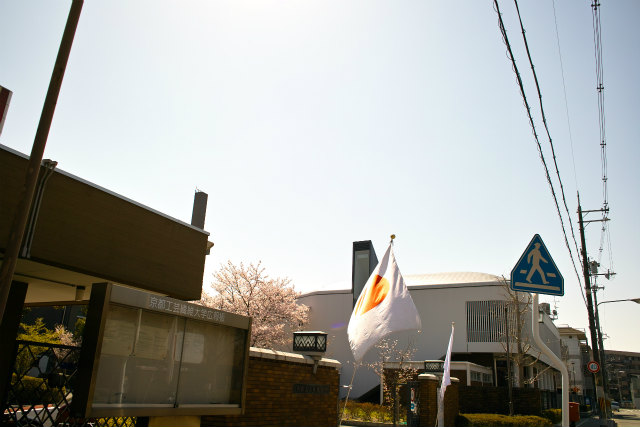
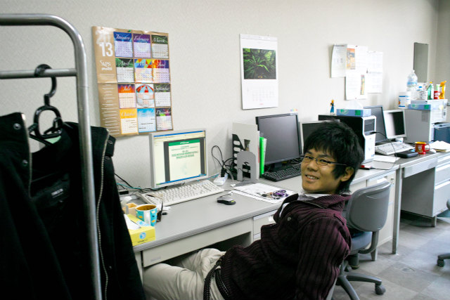
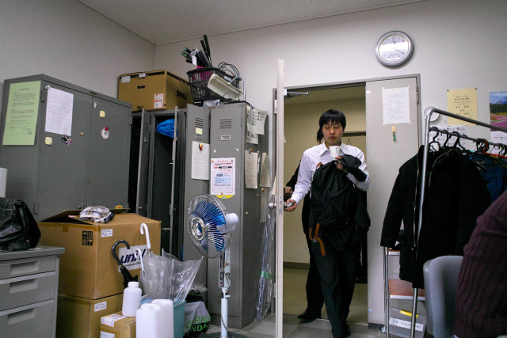
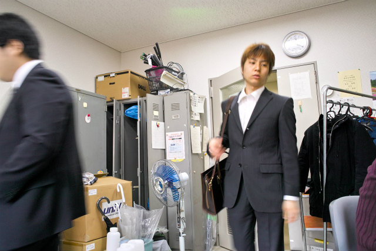
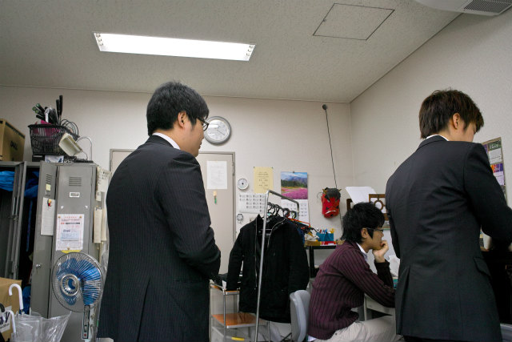
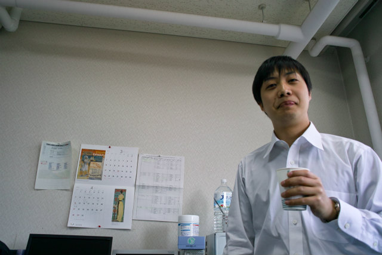
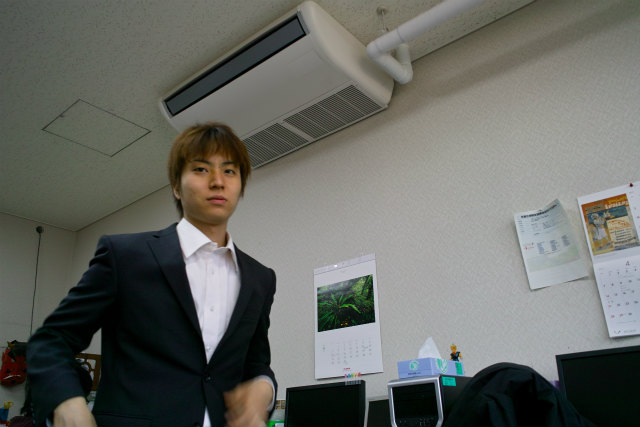
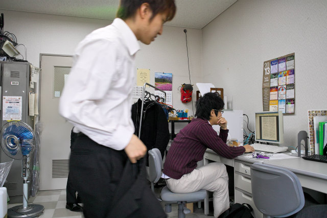

| ・入学宣誓式 (H25.04.05) | |||
去年は春の嵐でしたが、今年は晴天です。今年も4人が計測研に進学しました。オメデトウ！新M2は桜がすでに咲いた人もいますが、まだまだ就活は大変ですね。研究を夏にかけて詰めていかないと後々大変です。 |
|||
|

快晴！そして半端ない花粉飛散量！！ |

K林くん「え？式よりも研究テーマ探しですよ」 | ||
|

ぞろぞろ |

一行が到着しました | ||
|

ムーくん「ご飯いった？食堂はめちゃ混みやで」 |

F木くんが何かうまい事を言ったけれど忘れました。 | ||
|

N島くん「やれやれだぜ」 |

引き続きテーマ探し中 | ||